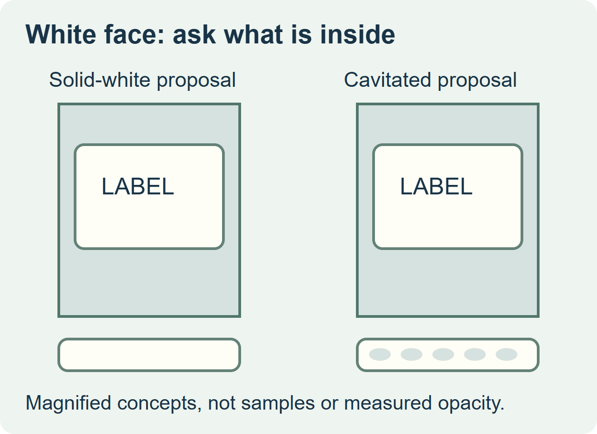
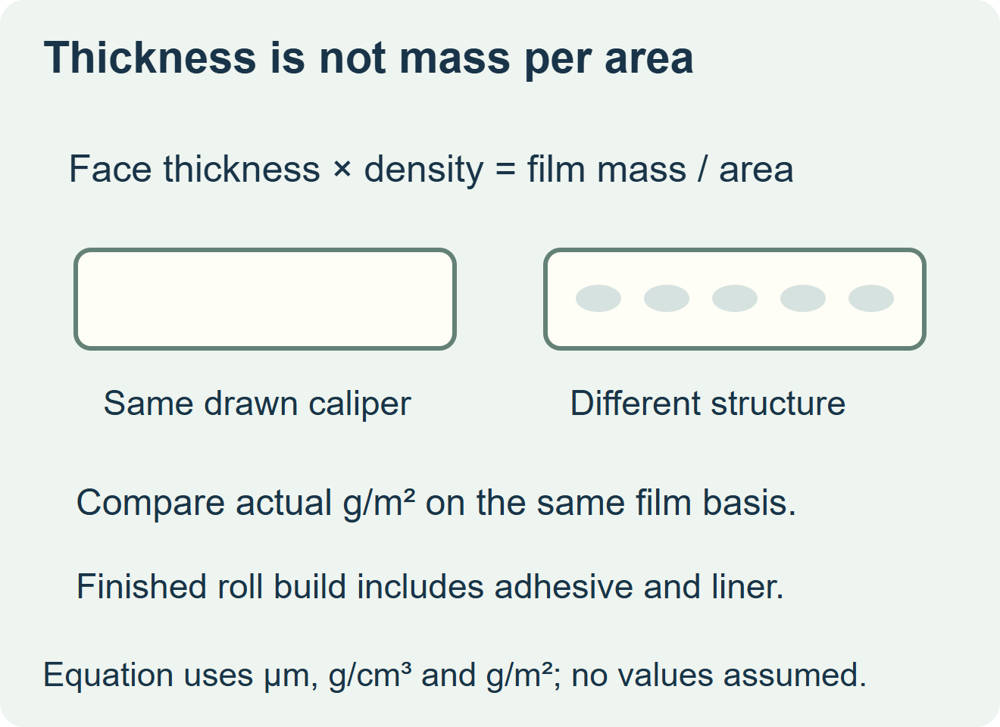

Choose between the actual solid-white and cavitated-white proposals after comparing the required opacity, finished print and application on the same package. Use the identified film structure and its data, not the words white BOPP or a matching thickness, as the material reference. If both complete constructions meet the job, compare their real delivered price and scope; a lower film density alone does not establish a cheaper finished label.


Two white films can have different internal structures
A cavitated film contains a voided structure within the film; solid-white and cavitated-white are distinct material descriptions. This is not a request for holes through the label or a claim that either film is transparent. Ask the supplier to identify the actual multilayer grade, coatings and intended label process.
Jindal’s published label-film guide separates solid-white and cavitated-white grades within its pressure-sensitive-label section. Its separate reel-fed and cut-and-stack sections also matter: do not select a grade for an adhesive-label order merely because a white film appears somewhere in the portfolio. The guide is a published product-family reference, not current stock confirmation or a ZFU specification.
The Label-Lyte pressure-sensitive-film brochure identifies a cavitated core for LH538 and a solid white core for SW247. It relates the cavitated example to opacity and density. These are named manufacturer constructions, not a universal ranking of all white films, an applicable food-contact declaration for this order or proof that either reference is supplied here.
Approve hiding power on the filled pack
State what must not show through: a dark drink, a coloured bottle or a contrasting package panel. Compare the proposed printed labels on those actual backgrounds. Whiteness of the loose face and opacity over a dark background are different observations. A white desk or screen proof can conceal an unsatisfactory background effect.
For a hypothetical sauce range, both offers look white on the sample sheet, but the brand needs the same pale name panel over light and dark sauces. Compare each complete proposal across the relevant filled jars under the intended viewing conditions. Record the actual accepted result; do not infer it from the film name or assume an added white ink pass is included.


Do not confuse lower mass with a thinner roll
For a uniform raw-film basis, mass per area in g/m² equals thickness in micrometres multiplied by density in g/cm³. Use the supplier’s actual values on the same measurement basis. If density is unavailable, request a stated film mass per area rather than infer it from a generic polymer name. Coatings and multilayer construction must be accounted for in the reported basis.
At equal face thickness, a lower-density film can have lower mass per area. That does not show that more finished labels fit within the same roll diameter. Roll build depends on the supplied thickness and web arrangement, including adhesive and liner, rather than on film mass alone. Likewise, a raw-film yield per kilogram is not the accepted piece count after conversion.
| Comparison field | Obtain for each actual offer | Decision it can support |
|---|---|---|
| Face structure | Exact solid-white/cavitated grade, coatings and data revision. | Which physical film is proposed. |
| Appearance | Printed samples on the same filled-pack backgrounds. | Whether the required hiding and colour appearance are accepted. |
| Thickness and weight | Named face caliper and density or mass-per-area basis. | Raw-film quantity comparison without confusing mass and volume. |
| Complete supply | Adhesive, liner, finish, conversion and finished-roll requirements. | What the delivered label and price actually include. |
| Use evidence | Relevant printing, dispensing, applied fit and handling sample. | Whether the offered construction represents the intended job. |
Keep the material change connected to the actual line
A lighter or more opaque face is not automatic dispensing approval. Evaluate the proposed converted roll on the intended station and inspect the applied pack. Record a change in adhesive, liner, coating or protective finish rather than attribute every observation to the film core. Use the linked stiffness guide for the separate release-and-fit question.
Retain the chosen construction and representative sample with the order. If a supplier later proposes another white grade at the same nominal thickness, review its identity and the affected evidence. No universal stiffness, tear resistance, saving, recyclability or food-contact approval follows from either family name.
Discuss the unresolved label requirement
Send the two exact construction references and data sheets, face thickness and mass-per-area or density, label dimensions, bottle/food-pack samples, appearance target, application method, exposure and quantities. Review food label options and prepare a label specification inquiry. The contact page opens an email draft and lists email or WhatsApp for attachments. Supply, proof options, testing, pricing and timing require project confirmation.